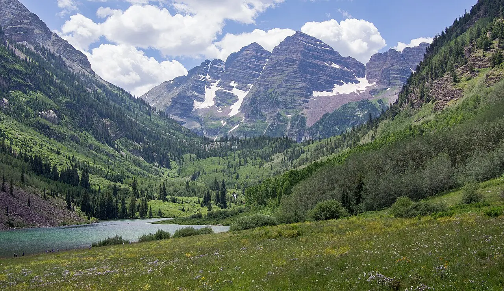

Десять дней поперёк Скалистых гор: паровоз на Силвертон, скальные города Меса-Верде, Million Dollar Highway без отбойников, Чёрный каньон и перевал Independence на 3 687 метрах.

седьмой день · самое фотографируемое место Колорадо
Весь путь одной лентой: перелёты, переезды и города с датами. Нажми на самолёт — подберём билеты на твои даты.
Фильтры ниже управляют картой и списком: выбери день, базу или категорию — на карте останутся только нужные точки. Галочка у места показывает/прячет его на карте, а ссылка на Google Maps в списке работает всегда.
Настоящая карта: кнопки + / − для зума, линейка масштаба (км/мили) внизу слева, выбор вида (карта / улицы / рельеф / спутник) справа вверху. Нажми на точку — описание и ссылка на Google Maps.
Нажми на день, чтобы раскрыть. Название места — ссылка на Google Maps. Ссылка «Маршрут в Google Maps» у каждого дня строится из отмеченных галочками точек.
Умная подборка колоритных и местных мест (проверено, закрытые убраны). А кнопки «Завтрак / Обед / Ужин» открывают Google Maps со всеми живыми вариантами этого города прямо сейчас. На карте еду включает переключатель «Еда».
| День | Отрезок | Расстояние | Время | С остановками |
|---|---|---|---|---|
| 1 | Прилёт DRO → Дуранго | 24 км | 25 мин | вечер |
| 2 | Поезд в Силвертон (без машины) | — | — | 6–9 ч |
| 3 | Дуранго ↔ Меса-Верде | 170 км | 2 ч | весь день |
| 4 | Дуранго → Урей (Million Dollar Hwy) | 120 км | 2 ч | 5–6 ч |
| 5 | Урей ↔ Теллурайд | 150 км | 2,5 ч | весь день |
| 6 | Урей → Аспен (Чёрный каньон) | 330 км | 5 ч | весь день |
| 7 | Аспен ↔ Maroon Bells | 30 км | 30 мин | весь день |
| 8 | Аспен ↔ долины Castle Creek | 60 км | 1 ч | весь день |
| 9 | Аспен → Денвер (Independence Pass) | 260 км | 4 ч | 6–7 ч |
| 10 | Денвер → аэропорт DEN, вылет 12:47 | — | 30 мин | утро |
| Итого | Дуранго → Денвер | ~1 150 км | ~18 ч | 10 дней |
Всё в одном месте: ночи и стоимость жилья, билеты, машина, входы и еда. Меняешь ночи или цены — итог считается сам.